Cordova：Plugin
2016年11月25日跟着Cordova：HelloWord搞定了怎么创建一个Android项目之后，看看怎么使用Cordova的Plugin吧。
因为使用命令行创建的项目导图AS时报错，有问题，所以这里直接创建一个项目，然后将需要的文件拷贝到项目中去即可。
1.添加插件
首先要通过cordova命令添加所需要的插件，此次测试一个比较简单的插件dialog，添加的命令cordova plugin add cordova-plugin-dialogs，看下图：
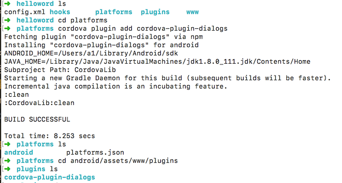
OK，添加成功了，从上图中可以看到进入到android/assets/www/plugins目录中已经有我们刚才添加的插件了，下面开始看怎么使用他吧。
2.创建新工程
下面是心创建的一个全新的项目HelloCordova
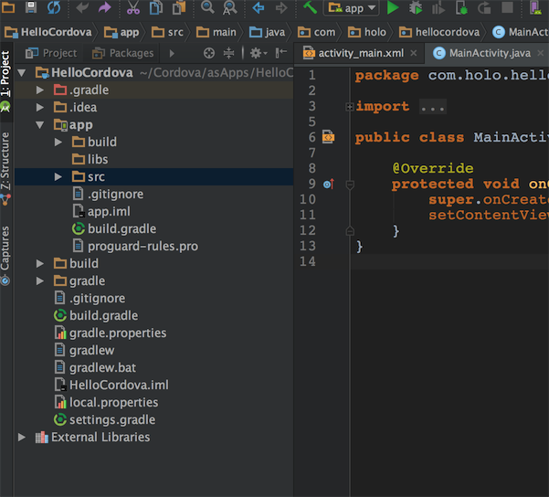
3.引入CordovaLib库
3.1首先创建一个Library
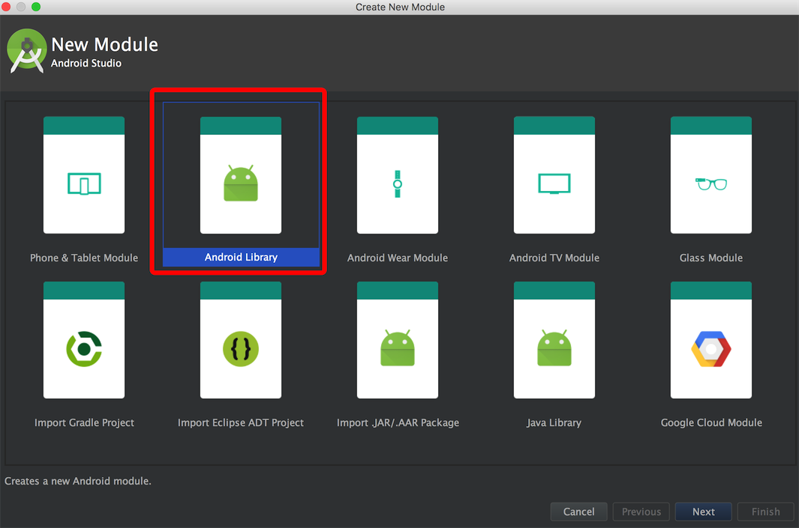
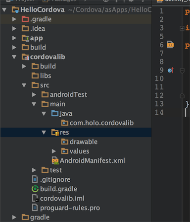
3.2拷贝CordovaLib源文件
Library创建完成后将我们需要的代码拷贝进来，要拷贝的代码在此目录下：
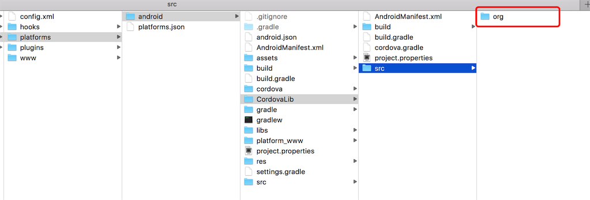
直接拷贝到项目中：
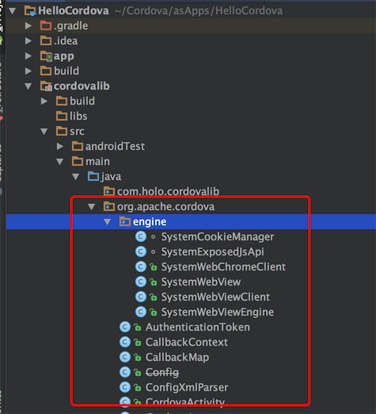
3.3拷贝Plugin源代码
Plugin的源代码在android/src目录下：
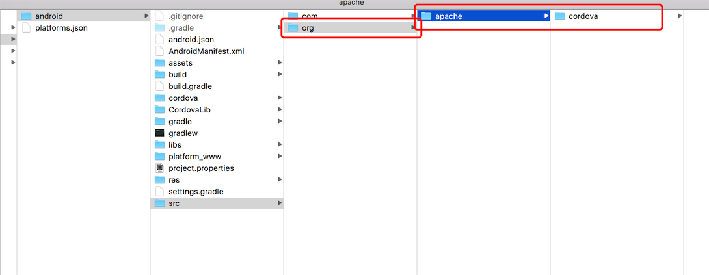
拷贝后：
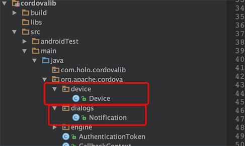
Device是创建项目的时候就有的，dialogs就是我们刚才添加的。
3.4拷贝Cordova配置文件
下面要拷贝的是res目录下的config文件，同样是拷贝到cordovalib的res目录下：
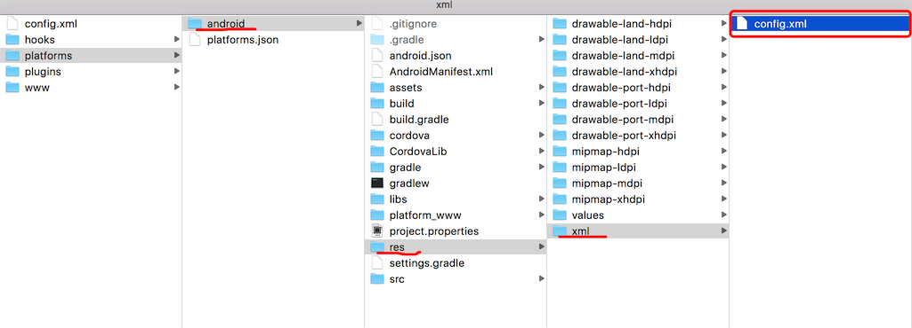
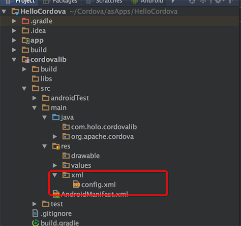
config.xml的内容感兴趣的可以自己搜一下，里面主要是配置一些插件信息以及项目信息
4.拷贝H5资源
H5资源位于android/assets目录下：
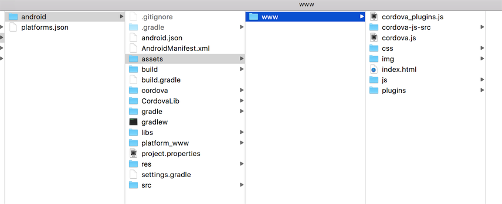
H5资源拷贝到主工程同样的位置：
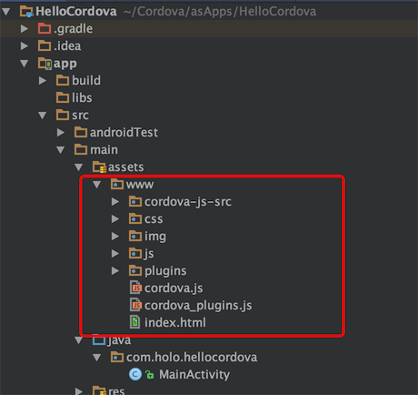
5.Activity加载
首先要在主工程的build.gradle中添加对cordovalib的依赖：
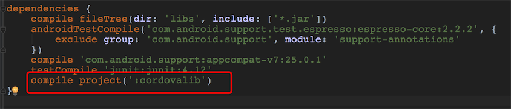
直接使用android/src下的MainActivity:
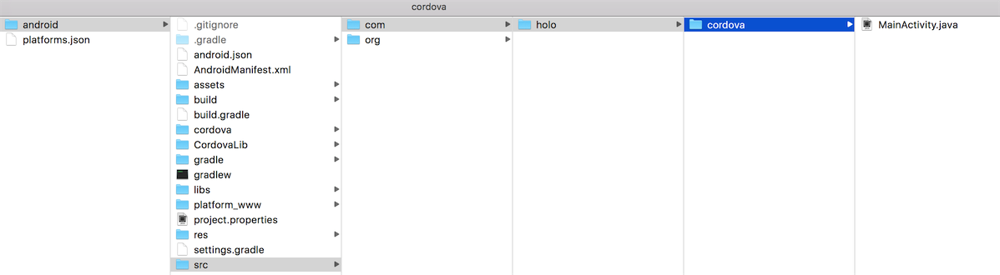
看注释loadUrl(launchUrl);中的launchUrl是在res/xml/config.xml中配置的，对应的是assets/www/index.html.
OK，基本搞定了80%，下面就是对index.html改造，引入我们刚才添加的Plugin dialogs.
6.在js文件中使用dialogs Plugin
首先我们在assets/js目录下创建一个js文件，就叫dialogsplugin.js，然后开始编码：
js编码完成，在html中引入就大功告成了
然后运行项目,看效果图：
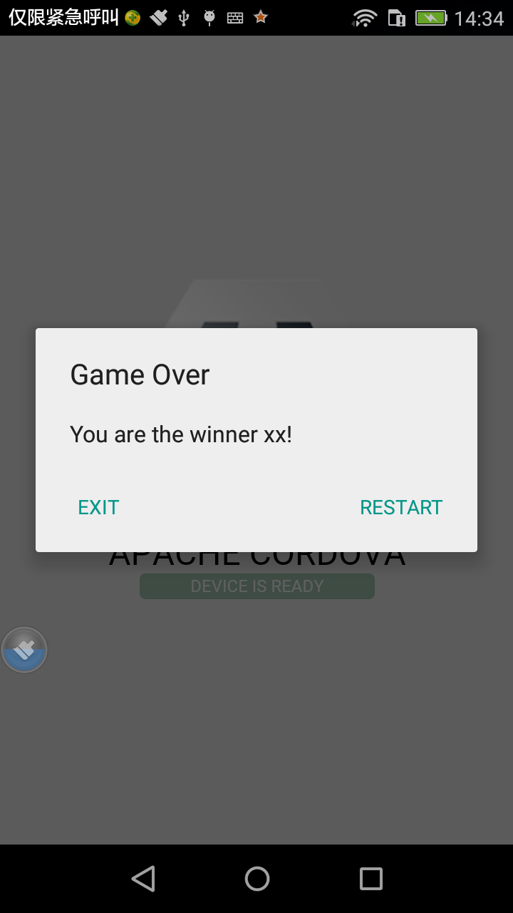